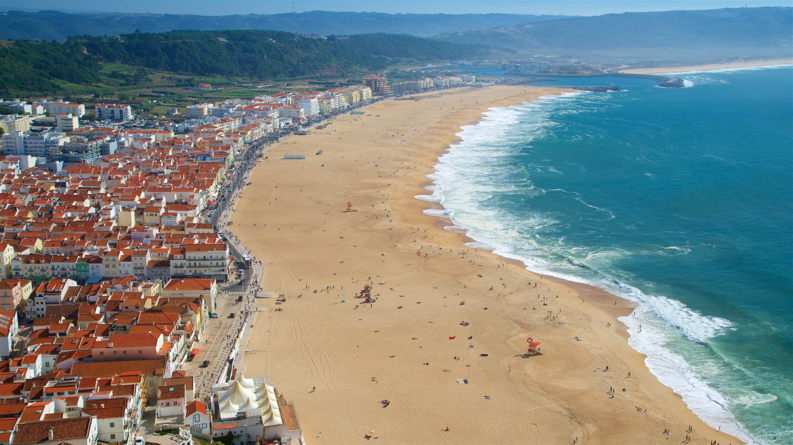

03.08.2006 Kyiv, Ukraine
National Technical University of Ukraine “Igor Sikorsky Kyiv Polytechnic Institute”
The town of Nazare in Portugal stands out most in my memory. It is a small fishing town on the Atlantic coast, world-renowned for its massive waves that attract surfers from every corner of the globe. Here, there is a striking blend of traditional Portuguese charm-narrow streets, colorful houses, and fish markets-and the rugged, powerful sea. The Sítio viewpoint, situated atop a high cliff, offers an incredible panorama of the ocean and the town's entire beach.
